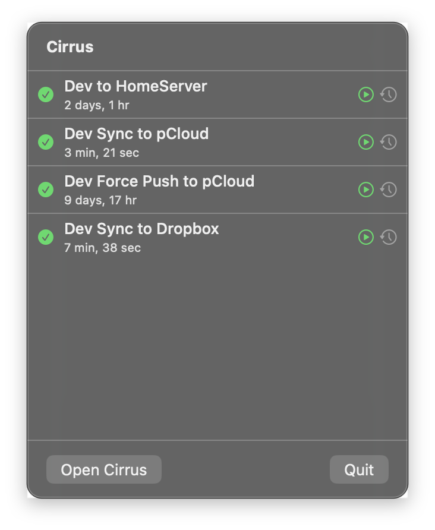
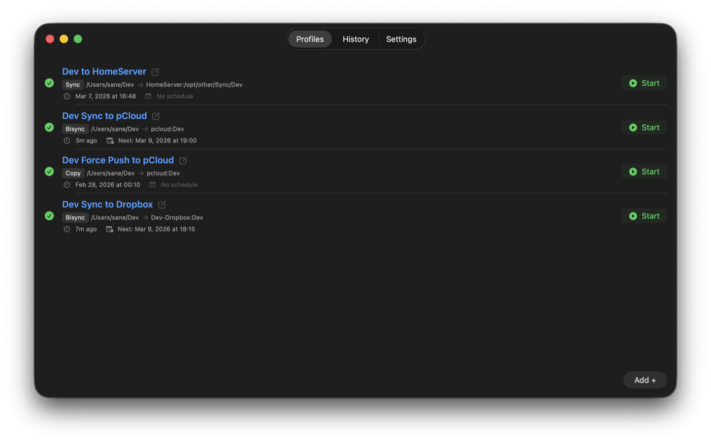
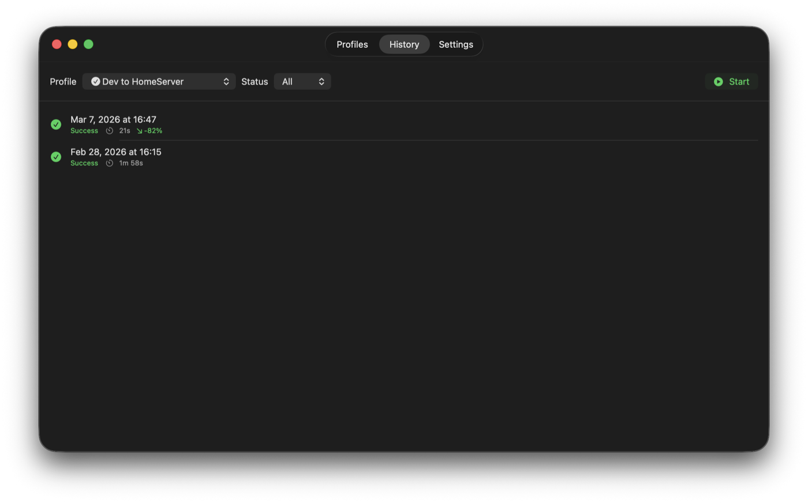
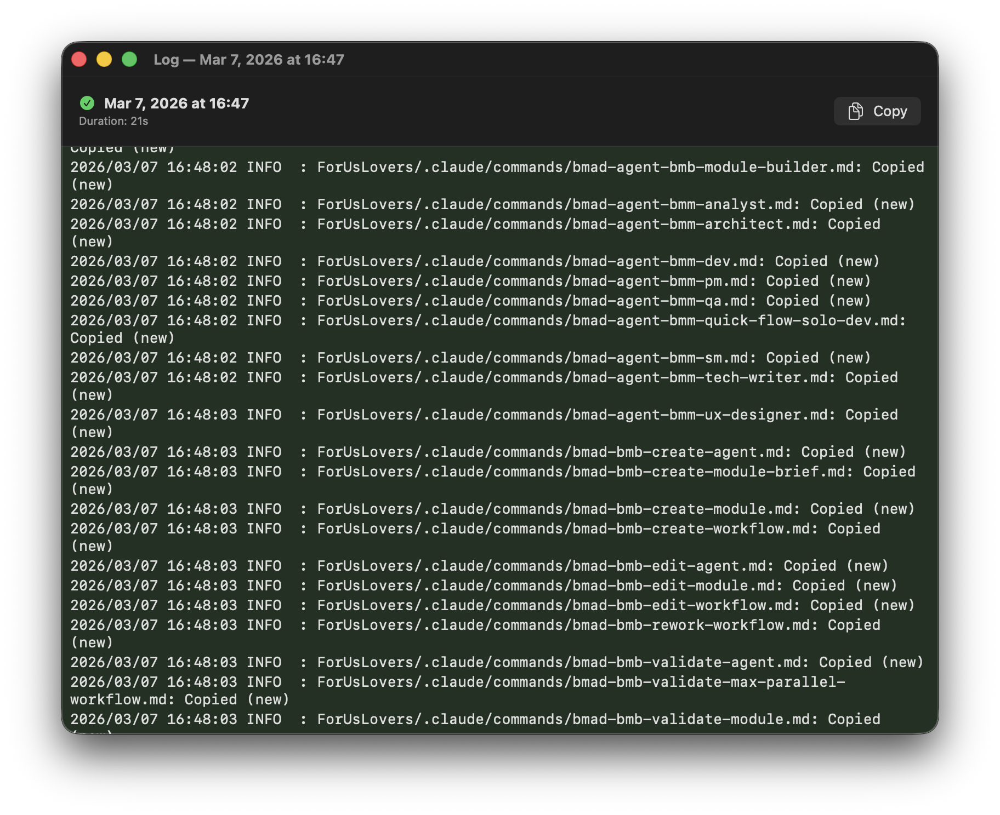
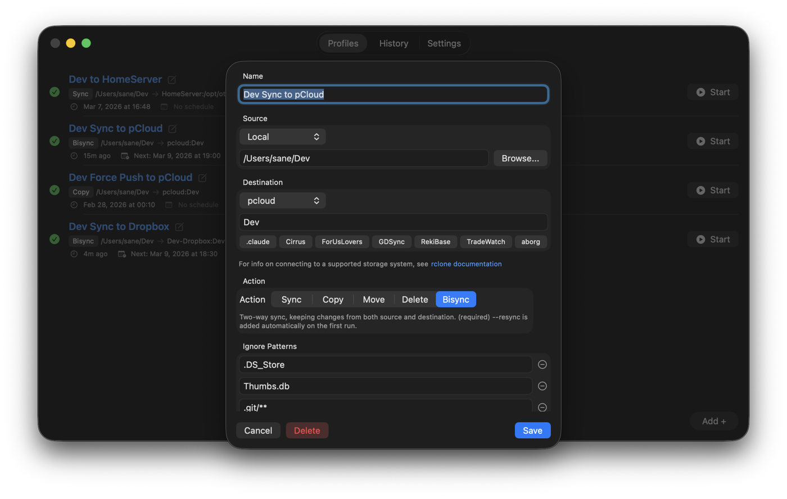

Cirrus
Run your rclone sync jobs from the menu bar, with reusable profiles instead of shell scripts.
What it is
Cirrus is a native macOS menu bar app for running rclone sync jobs without writing or maintaining shell scripts for them. Instead of a script per job, you set up a profile: a source and destination, the rclone action to run, ignore patterns, and any extra flags. Cirrus turns that into the actual rclone command and manages running it.
It works through two surfaces. Click the menu bar icon and you get a compact tray popup listing every profile with a status badge and its last run time, so starting or canceling a job is two clicks away. Open the main window when you need more room, and you get three tabs: Profiles for creating, editing, and dry-running your configs, History for browsing past runs and their logs, and Settings for pointing Cirrus at your rclone binary.
It's for anyone who's been copying and tweaking the same rclone command or shell script for every remote or backup job, and would rather manage that as a list of reusable profiles with a GUI on top, including scheduling so jobs can fire on their own.
Features
- Profile management: configure source and destination endpoints (local path or remote), the rclone action, ignore patterns, and extra flags, per profile
- Paste-to-create: paste an existing rclone command like
rclone sync ~/docs gdrive:backup --exclude "*.tmp"and Cirrus parses it into a profile's form fields automatically - Multiple sync actions: sync, copy, move, bisync, or delete, chosen per profile (bisync auto-adds
--resyncon its first run) - Cron scheduling: build a schedule visually or type a raw cron expression; jobs fire automatically while the app is running
- Live log streaming: watch rclone's output in real time while a job runs
- History & log viewer: browse per-profile run history with syntax-highlighted logs (red for errors, yellow for warnings)
- Network detection: jobs won't start when you're offline
- Status badges: color and shape indicators (green checkmark, red xmark, yellow clock) show a profile's last result in the tray popup, profile list, and history
Screenshots





Getting started
You'll need rclone itself; Cirrus auto-detects it in your PATH on first launch, or you can point it to a binary manually in Settings (it can also install rclone to ~/.local/bin for you). Cirrus builds from source with Xcode and XcodeGen; there's no App Store release.
git clone https://github.com/Sleepy-Magpie-LLC/Cirrus.git
cd Cirrus
brew install xcodegen # if you don't have it
xcodegen generate
xcodebuild -project Cirrus.xcodeproj -scheme Cirrus -configuration Release buildThe repo's README covers debug builds, finding the built app in DerivedData, running the test suite, and the rest of the feature list.